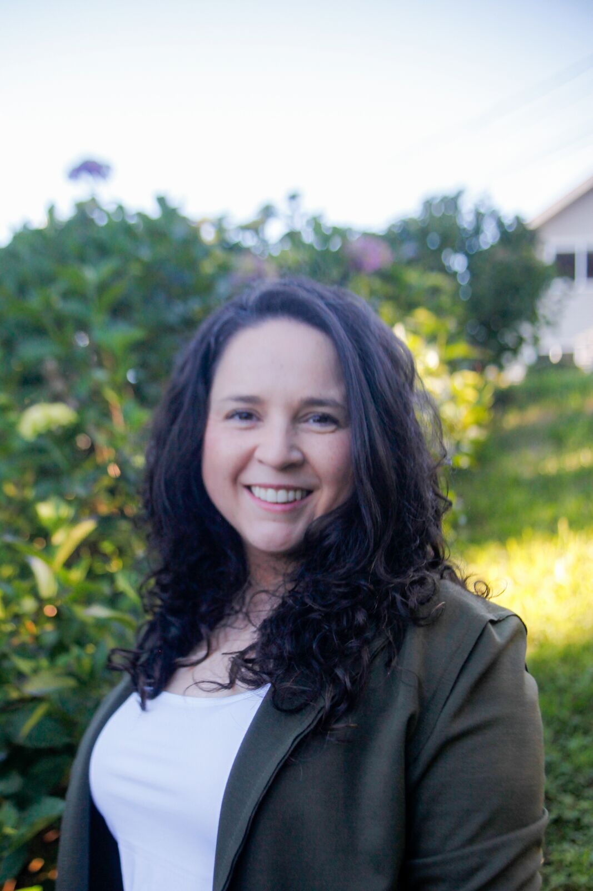
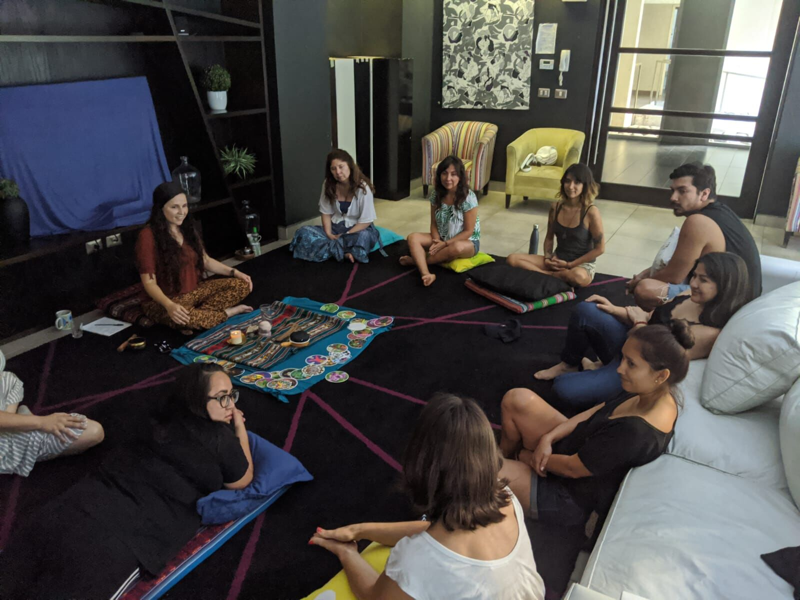

1
Compassionate Inquiry
A gentle, attentive dialogue that looks beneath the surface of a difficulty to the beliefs and body memories that sustain it.
Learn more →Holistic facilitation · Puerto Varas, Chile
Habitar el Camino accompanies you on your path: a safe space to reconnect with your inner power and transform difficulties into calm and presence.

The approach
When we are met with compassion, in a space where we feel truly seen, we can process what hurts and heal in a deep and lasting way. My role is to hold that space, so each consultant can find their own clarity.
Offerings
A gentle, attentive dialogue that looks beneath the surface of a difficulty to the beliefs and body memories that sustain it.
Learn more →A systemic look at the bonds and loyalties we carry from our family, bringing to light what needs to find its place.
Learn more →Cacao ceremonies and guided meditations that open a safe container to slow down, feel, and return to the present.
Learn more →“I am here to hold that space for you, facilitating your journey toward calm, presence, and your own inner power.”

About Carolina
Born in Santiago and shaped by half a life in Canada, Carolina trained as a forestry and environmental engineer before her calling led her to work alongside Indigenous communities, travel from Alaska to Chile, and complete a two-year apprenticeship with a shaman in Guatemala.
Read her storyWrite to me to book a session or ask any questions. I'll get back to you personally.